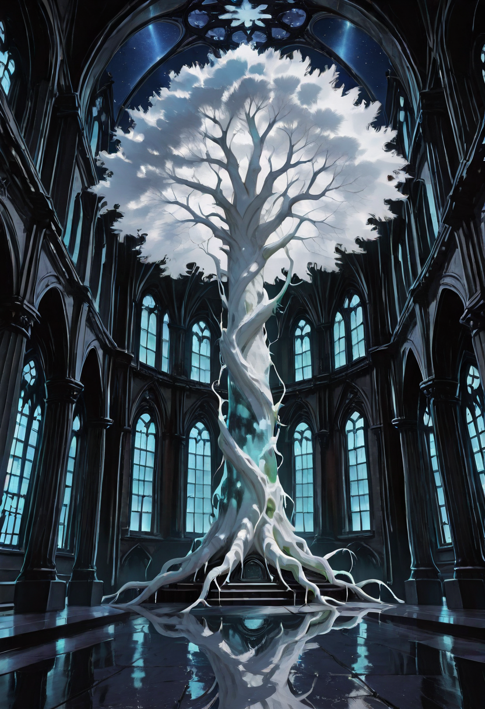
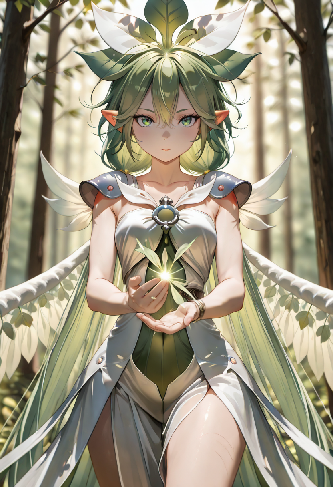

The Mysteries of the Root Mother
The deeper nature of Malicott — her origins, the Ritual of Birth, the Dialogue of the Grafting, the secret of the Mailform — is recorded in a separate archive. These are the hidden truths that only those who dwell long within the Empire come to understand.
The Secrets of Malicott →

The Mother Who Commands
Malicott is not a general. She is a mother who forgot how to stop creating. Every soldier in the Empire of the Forgotten passed through her hands , not as clay, but as something more precious: a soul that deserved a second chance. She knows each one of them. She remembers the moment they woke up, the fear in their eyes, the way they held their hands to check whether they still had them. She carries all of them.
On the battlefield, Malicott fights with the same intent with which she heals , with extreme precision and no sentiment. She does not mourn losses mid-combat, because she knows grief is a luxury for after. She uses a Sap Whip, a living weapon grown from the ligaments of the Mother Tree, that leaves Spore marks on every enemy it touches , invisible seeds waiting to be detonated.
Her ultimate technique, The Curse of the Gift, is whispered with dread across the Forgotten. When she activates it, the earth itself answers. Roots breach the surface with the patience of centuries, and every enemy who falls below the threshold she sets becomes one with the soil. What she takes, she returns to her own.